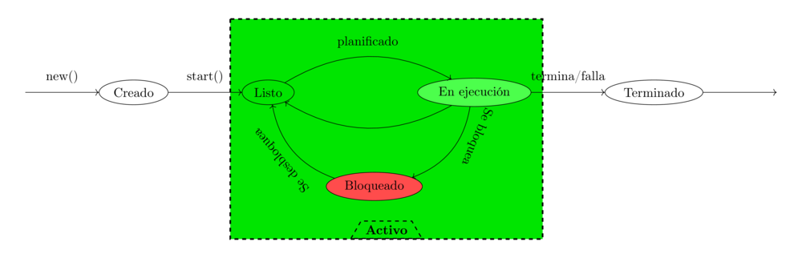

Apuntes
El siguiente es un apunte escrito para el curso Tópicos Avanzados en Programación Concurrente.
- Fuentes de este apunte: Repositorio de Github
- Códigos extraídos (tangled) de este documento se encuentran en el directorio
tangled/*de este repositorio.

This work is licensed under a Creative Commons Attribution-ShareAlike 4.0 International License.
Este obra está bajo una licencia de Creative Commons Reconocimiento-CompartirIgual 4.0 Internacional.
Para compilar los códigos de Ada 2012 se requiere del compilador GNAT y la utilidad gprbuild. La siguiente secuencia de comandos permite generar los binarios:
cd tangled/ada gprbuild tapc.gpr -p
Luego, los binarios se pueden encontrar en la carpeta tangled/ada/bin y se ejecutan de la forma convencional:
bin/producer_consumer

1 Concurrencia
Dos tareas activas al mismo tiempo.
Con o sin soporte multitarea del hardware (paralelismo exige soporte de hardware).
1.1 Procesos
Una actividad de concurrente.
1.2 Hilos de ejecución (threads)
Trabajar con muchos hilos no necesariamente aumenta la eficiencia de la ejecución proporcionalmente.
2 Características
2.1 Competición
Pelearse por un recurso.
2.1.1 Deadlock
Trabarse entre sí.
2.1.2 Starvation
Un proceso nunca puede llegar a completarse.
2.2 Cooperación
- Trabajan de forma independiente.
- En algún momento se sincronizan y cooperan.
3 Propiedades
3.1 Seguridad y de vida
Un programa hace lo que fue pensado o diseñado.
- Dos procesos no pueden mezclarse.
- Se requiere una exclusión mutua para no mezclar los recursos.
3.1.1 Livelock
Cuando los procesos no concuerdan al compartir información o estado.
3.1.2 Viveza
- Justicia : Un proceso que puede ser ejecutado, va a ser ejecutado. Que todos los procesos reciban un tiempo de ejecución de manera justa.
4 Hilos
Un hilo está activo cuando está "con vida" en el sistema. O sea que está en un estado: listo, en ejecución, bloqueado.
4.1 Estados

4.1.1 Creado
4.1.2 Listo
Cuando comienza. Scheduler indica cuándo pasar a ejecución.
- Puede pasar a ejecución.
4.1.3 En ejecución
Las instrucciones se ejecuta en el CPU.
- Cuando se bloquea pasa a bloqueado.
- Puede pasar a listo.
4.1.4 Bloqueado
Se bloquea debido a que requiere de un recurso.
- Al desbloquearse pasa a listo.
4.1.5 Terminado
Puede ser por falla o porque no hay más instrucciones.
4.2 Métodos
- Start :
- Join :
- Sleep :
- Yield : Pasar a otro proceso.
- currentThread :
Runtime.getRuntime().availableProcesors()
4.3 Propiedades y características
4.3.1 Seguridad / safety
Un proceso es seguro cuando:
- Se utiliza exclusión mutua
- Condición de sinc.
- Se evita el deadlock.
4.3.2 Viveza / liveness
- Evitar inanición (que se quede en estado de Bloqueado siempre).
4.3.3 Características de PC
- Indeterminismo : No se puede asegurar la salida porque no se sabe cómo actuará la concurrencia (en qué orden se ejecutan primero o último).
4.4 Inconsistencia
Lo siguiente puede suceder.
4.4.1 Condición de carrera
Cuando se comparte un recurso (o variable) entre dos procesos.
5 Problema de sincronización
Para evitar la condición de carrera, el hilo se debe tomar el dato, modificarlo y después soltarlo.
- mutex: exclusión mutua
- java usa syncronized.
syncronized se utiliza tanto en la lectura y escritura del dato compartido.
public synchronized getData(){ } public synchronized setData(){ }
5.1 Sección crítica
Se considera que el código de la sección crítica es una operación atómica.
5.1.1 Uso de la sección crítica
5.1.2 Debe Cumplir
- Exclusión mutua
- Progreso
- Espera limitada
5.1.3 Mecanismos
- Semáforos
Existen binarios o generales.
- Binario : Piden un permiso.
- General : Pueden pedir N permisos.
Tiene dos operaciones (son atómicas):
- Adquirir permiso :
- Si el semáforo no es nulo, se puede adquirir el permiso.
- Si el semáforo es nulo, se suspende.
- Liberar permiso
- Si hay procesos suspendidos, activa uno.
El liberar puede liberar uno o más de uno dependiendo si el semáforo es general o binario.
Observar que tomar un permiso con
sem.aquire(1)es más simple quesem.aquire(4). Por lo que simularía daría prioridad a los hilos que usen un número menor de permisos.Cuando un semáforo se libera el scheduler determina qué otro thread adquiere la ejecución y el semáforo.
Al utilizar varios semáforos o varios procesos a sincronizar, se torna difícil de entender y gestionar. Es mejor usar los semáforos cuando hay procesos que se sincronizan al estilo "primero uno y después el otro".
También, se puede utilizar semáforos para establecer un orden de ejecución o de precedencia de los procesos.
procedure P0 is begin -- Hacer algo Liberar (Sem0_1); Liberar (Sem0_2); end P0; procedure P1 is begin -- Hacer algo Liberar (Sem1_3); end P1; procedure P2 is begin -- Hacer algo Liberar (Sem2_3); end P2;
- Monitores
Están en estrecha relación con POO y con un mayor nivel de abstracción. Es un recurso compartido (el dato) con métodos sincronizados.
Usualmente, el monitor (el que posee los métodos sincronizados) es el objeto pasivo.
- Los métodos con syncronized significa que se produce una exclusión mutua.
- Cada proceso tiene su lock.
wait()bloquea el proceso actual y libera para que el próximo proceso pueda utilizarse.notify(), notifyAll()
- Synchronized de Java
Un método declarado como
synchonizedtiene dos efectos:- No es posible que se produzcan dos invocaciones de méntodos synchronized de un mismo objeto al mismo tiempo.
- Establece una relación de "sucede-antes" con cualquier invocación subsecuente de un método de sincronización. En otras palabras, se establece un orden en la ejecución de los métodos.
En otras palabras, se previene la interferencia entre los hilos y la generación de inconsistencias.
Se explica en la sección Syncronization de The Java(tm) Tutorials.
- Locks
6 Problemas clásicos
En todos los modelos hay:
- Objetos activos
- Objetos pasivos : Recursos que se comparten entre todos los objetos activos.
6.1 Hilos que no hacen nada
- Objetos activos: Tareas/hilos
- Objetos pasivos: Ninguno
Simplemente, son hilos o tareas que no realizan ninguna acción de importancia. Este problema se presenta aquí con la intención de mostrar cómo escribir tareas o probar el funcionamiento de los hilos.
También, es de utilidad para observar el funcionamiento del sistema operativo su forma de reconocer los hilos bajo cierto lenguaje.
Considere utilizar algún mecanismo de señal para terminar el proceso: Control + C en sistemas basados en Unix o ejecutando kill -9 ID_PROCESO.
6.1.1 TODO Implementación
6.2 Filósofos cenando
- Objetos activos: Filósofos cenando/pensando.
- Objetos pasivos: tenedores (o palillos).
Se puede utilizar el tryAcquire() de un semáforo para intentar adquirir un tenedor. Si está libre lo toma, sino lo deja.
6.2.1 TODO Solución
6.3 Barbero dormilón - rendez-vous
- Objetos activos: Barbero, clientes.
- Objetos pasivos: corte, barba.
- El barbero se duerme si no hay clientes en espera
- Clientes despierta al barbero para atenderlo
- Barbero despierta al cliente al terminar de razurar
- Nuevos clientes esperan si el barbero está ocupado.
6.3.1 TODO Solución
6.4 Productor-consumidor
- Objetos activos: Productores y consumidores.
- Objectos pasivos: datos y buffer.
Dos tipos de buffer (o de problemas Productor-Consumidor):
- Buffer limitiado
- Buffer ilimitado
Productor-consumidor con un buffer de tamaño 1 (de un solo dato) es muy poco utilizado.
Esquema:
task body Productor is begin loop Producir (Dato); Poner_Dato (Dato, Buffer); Liberar (dato_disponible); end loop; end Productor;
task body Consumidor is begin loop dato := Sacar_Dato(Buffer); Cosumir (Dato); end loop; end Consumidor;
6.4.1 Problema sin sincronización
A continuación se detalla el código de productores consumidores con condición de carrera.
El programa generará una cantidad determinada de productores y consumidores. Los productores generarán una cantidad máxima de números enteros, por ejemplo de 10000 a 0, sin repetir el número. Los consumidores retirarán este número del almacenamiento y lo reportarán a la salida estándar.
- Bibliotecas necesarias
Necesitaremos las siguientes biblietecas de Ada para poder almacenar datos dinámicamente e imprimir en pantalla:
with Ada.Containers.Vectors; with Ada.Text_IO; use Ada.Text_IO;
Luego se comenzará con el programa principal.
procedure Producer_Consumer is
- Estructuras necesarias
Se requerirá un vector del dato que se quere producir y consumir. En este caso, el tipo de dato será entero. En Ada, el Vector es un paquete genérico donde se debe instanciar en un paquete usable definiendo el tipo de dato del elemento y del índice.
package Data_Vectors is new Ada.Containers.Vectors (Element_Type => Integer, Index_Type => Positive);
Se requerirá dos tipos de tareas, uno para los consumidores y otro para los productores. Se declara una entrada para inicializarlas con un
Idpara identificarlas al momento de imprimir en pantalla. Además, se utilizará esta entrada para que las tareas al ser creadas esperen y no se ejecuten hasta que el programa principal les indique.task type Consumer_Task is entry Initialize (The_Id : Integer); end Consumer_Task; task type Producer_Task is entry Initialize (The_Id : Integer); end Producer_Task;
- Datos disponibles
El programa principal y las tareas dispondrán de los siguientes datos:
- El máximo número de elementos a producir. Éste número es constante.
- Una instancia de
Data_Vectors.Vectorque almacenará los datos producidos. - El número de dato actual que se está produciendo. Comenzará con el máximo e irá disminuyendo a medida que se produce un dato.
Maximum_Element : constant Integer := 10000; Data : Data_Vectors.Vector; Current_Element : Integer := Maximum_Element; - Implementación del consumidor
La tarea para el consumidor requerirá de las siguientes variables locales: una variable temporal para retener el elemento a consumir y su id.
task body Consumer_Task is Element : Integer; Id : Integer; begin
- La inicialización del consumidor
Para inicializar simplemente se asignará el parámetro a la variable local y se reporta el inicio del consumidor en consola.
Cuando la tarea se crea, su ejecución comienza inmediatamente. Esta entrada está declarada como
acceptpara que se bloquee hasta que reciba el mensajeInitialize (The_Id: Integer). Al recibirlo, ejecutará el código de inicialización y continuará con la ejecución.accept Initialize (The_Id : Integer) do Id := The_Id; Put_Line ("T" & Id'Image & "> Consumer initialized."); end Initialize;
- Consumir hasta el último elemento
La siguiente repetitiva retira un elemento del vector global y lo muestra en pantalla. Esto será realizado mientras que el último elemento producido sea mayor que cero.
while Current_Element > 0 loop Element := Data.First_Element; Data.Delete_First; Put_Line ("T" & Id'Image & "> Consumed element:"); Put_Line (" " & Element'Image); end loop;
- Fin del consumidor
Para identificar cuándo termina, se programará al consumidor para que escriba en la salida que ha concluido.
Set_Colour (Green); Put_Line ("T" & Id'Image & "> Consumer ended."); Default_Colour; end Consumer_Task;
- La inicialización del consumidor
- Implementación del productor
En el caso del productor, solo se necesita almacenar localmente el id de cada uno.
task body Producer_Task is Id : Integer; begin
La inicialización es análoga al consumidor.
accept Initialize (The_Id : Integer) do Id := The_Id; Put_Line ("T" & Id'Image & "> Producer initialized."); end Initialize;
- Producir hasta el último elemento
La siguiente repetitiva incorporará un dato entero dentro del Vector compartido con los consumidores. Luego, reportará qué elemento se produjo por terminal.
A medida que se van produciendo, el índice del elemento actual se reducirá en uno. Obsérvese que se crearán varios productores, por lo que se podría esperar que el índice será modificado por cada uno de ellos delegando la producción de uno o varios ítems a los distintos productores.
while Current_Element > 0 loop Data.Append (Current_Element); Put_Line ("T" & Id'Image & "> Produced element:"); Put_Line (" " & Current_Element'Image); Current_Element := Current_Element - 1; end loop;
- Fin del productor
Al terminar de producir todos los ítems, se reporta en la salida estándar que el productor concluyó con su tarea.
Put_Line ("T" & Id'Image & "> Producer ended."); end Producer_Task;
- Producir hasta el último elemento
- Progama principal
La tarea de la tarea o programa principal es la de inicializar cada tarea y permitir su ejecución.
Se requerirá crear y almacenar los productores y consumidores en un arreglo. Se crearán hasta 20 tareas de cada uno. La variable
Iserá utilizada como índice para asignarles un identificador único a cada tarea.Producers : array (1 .. 20) of Producer_Task; Consumers : array (1 .. 20) of Consumer_Task; I : Integer := 0; begin
Al llegar al
begindel programa principal, las tareas comenzarán su ejecución. Sin embargo, todas se detendrán al encontraraccept Initialize (The_Id: Integer)a la espera de dicho mensaje.Cabe aclarar que la inicialización es para asignarles a las tareas un identificador númerico fácil de leer. Sin embargo, no es necesario puesto que las tareas ya se ejecutan automáticamente y ya poseen un identificador asignado por el lenguaje Ada. En este caso se realiza como convención y para que las tareas esperen a ser iniciadas al mismo tiempo.
Por último, cuando la tarea principal se termine de ejecutar, el programa no se cerrará hasta que todas las tareas dependientes finalicen.
A continuación, se procede a inicializar las tareas con su para asignarles su Id numérico.
Put_Line ("Main thread"); for Producer of Producers loop Producer.Initialize (I); I := I + 1; end loop; for Consumer of Consumers loop Consumer.Initialize (I); I := I + 1; end loop; Put_Line ("End of main thread"); end Producer_Consumer;
- Mejoras: afinidad, prioridad y dominio de CPU
Al declarar las tareas se puede indicar la afinidad, en otras palabras, en qué CPU se debe ejecutar, la prioridad de cada tarea y el dominio del CPU.
El dominio de CPU permite agrupar los CPU en dominios y asignarles a las tareas dicho dominio. O sea, repartir ciertas tareas a un grupo de CPUs.
Para más información, ver el estándar de Ada en el anexo D.16: Info manual: Ada Reference Manual, Anexo D.16 ó en la Web visitar Ada Conformity Assesment Authority, Ada Reference Manual, Annex D.16 Multiprocessor Implementation.
6.4.2 TODO Solución con semáforos
6.5 TODO Lectores-escritores
6.6 TODO Cocinero-comensal
6.7 Fumadores
Todos los fumadores tienen que entrar a la sala. Cada fumador tiene algún item para armar el cigarrillo. Al entrar a la sala, arma el cigarrillo y lo fuma. En la sala se incorpora un item necesario para armar el cigarrillo.
- Objeto activos: Fumadores
- Objeto pasivo: Sala
La sala es el monitor con métodos synchronized: entrar_fumar(int ingredientes), terminar_fumar() y colocar(int noesta). El último incorpora un ítem en la sala para que el fumador arme el cigarrillo.
6.7.1 TODO Solución
7 Hilos en los lenguajes de programación
7.1 Ada
En Ada los hilos se denominan Tasks.
- "Tasking" section on the WikiBook "Ada Programming".
- Chapter 6 "Concurrency" at Ada 83 Quality and Style Guide
- Chapter 6 "Concurrency" at Ada 95 Quality and Style Guide
- Section 9 "Tasks" at Ada '83 Reference Manual
- Section 9 "Tasks and Synchronization" at Ada 2012 Reference Manual
- Annex D "Real-Time Systems" at Ada 2012 Reference Manual (normative) La mayoría de las secciones de este anexo posee información acerca de prioridad, dispatching model, planificador, multiprocesamiento, dispatching domain para multiprocesadores, etc.
7.2 Python
7.2.1 Threads
- https://docs.python.org/3/tutorial/stdlib2.html#multi-threading
- threading module:
https://docs.python.org/3/library/threading.html#module-threading
- http://rosettacode.org/wiki/Dining_philosophers#Python
- Reader-writer problem:
http://rosettacode.org/wiki/Synchronous_concurrency#Python
- Queues to simplify thread creation and processing:
7.2.2 Coroutines and tasks
- https://docs.python.org/3/library/asyncio-task.html?highlight=coroutine
- asyncio module that implements the
asyncandawait. https://docs.python.org/3/library/asyncio.html?highlight=asyncio#module-asyncio - The
async defreturns a Coroutine object: https://docs.python.org/3/c-api/coro.html?highlight=coroutine - https://docs.python.org/3/reference/compound_stmts.html#async-def
- PEP-0492 that proposes the Coroutine. https://www.python.org/dev/peps/pep-0492/